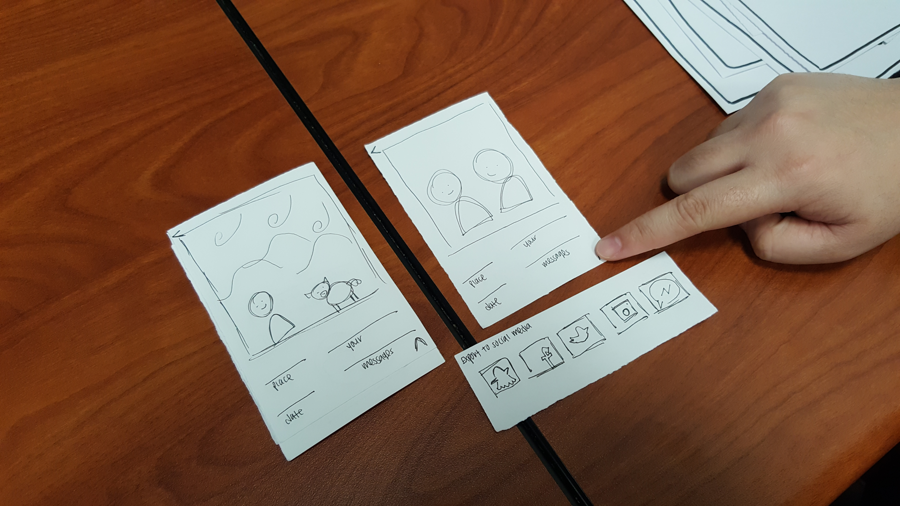
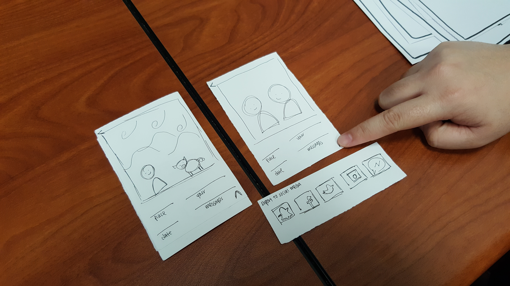

During the first prototype, I have drop down options
that my user likes. She is a bit confusing between the transition
because she does not have to press anything; it is the phone tracking
her location from where she went from and to the place she arrives at.
After adding the ability to share the photos to social media, mu user
has no concerns, except on finding a code to input data and to store.